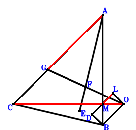
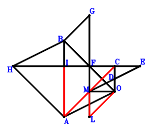
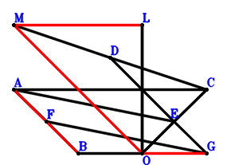
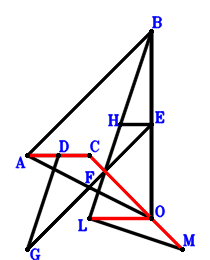

Exercise 9263： Let ABOE be a trapezoid with BA//OE and BA=2OE. D is the midpoint of CO. DE⊥ML and BA⊥MO. B, L, O are collinear and CA//LO. \(CA·LO=BL·BO\). Given that C, M, O are collinear, prove that \(BO^{2}=CO \cdot MO\).
Exercise 9941： Let LDBO be a rectangle. E is the centroid of △CBO. E, F, A are collinear and FA=3EF. F is the midpoint of GO. CA⊥LO and AB⊥MO. Given that C, M, O are collinear and GA//ML, prove that \(CO·MO=2·GA·ML\).

\(\because \) LDBO is a parallelogram \(\therefore \small\overrightarrow{OD}=\small\overrightarrow{OB} + \small\overrightarrow{OL}\).\(\because \) E is the centroid of △CBO \(\therefore \small\overrightarrow{OE}=\dfrac{\small\overrightarrow{OB}}{3} + \dfrac{\small\overrightarrow{OC}}{3}\).\(\because \) E, F, A are collinear and FA=3EF \(\therefore \small\overrightarrow{OF}=\dfrac{\small\overrightarrow{OA}}{4} + \dfrac{3 \small\overrightarrow{OE}}{4}=\dfrac{\small\overrightarrow{OA}}{4} + \dfrac{\small\overrightarrow{OB}}{4} + \dfrac{\small\overrightarrow{OC}}{4}\).\(\because \) F is the midpoint of GO \(\therefore \small\overrightarrow{OG}=2 \small\overrightarrow{OF}=\dfrac{\small\overrightarrow{OA}}{2} + \dfrac{\small\overrightarrow{OB}}{2} + \dfrac{\small\overrightarrow{OC}}{2}\).\(\because \) DB⊥BO \(\therefore \small\overrightarrow{BD} \cdot \small\overrightarrow{OB}=\small\overrightarrow{OB} \cdot \left(- \small\overrightarrow{OB} + \small\overrightarrow{OD}\right)=\small\overrightarrow{OB} \cdot \small\overrightarrow{OL}=0\) . . . . . . \(①\)\(\because \) AB⊥MO \(\therefore \small\overrightarrow{BA} \cdot \small\overrightarrow{OM}=\small\overrightarrow{OM} \cdot \left(\small\overrightarrow{OA} - \small\overrightarrow{OB}\right)=\small\overrightarrow{OA} \cdot \small\overrightarrow{OM} - \small\overrightarrow{OB} \cdot \small\overrightarrow{OM}=0\) . . . . . . \(②\)\(\because \) CA⊥LO \(\therefore \small\overrightarrow{CA} \cdot \small\overrightarrow{OL}=\small\overrightarrow{OL} \cdot \left(\small\overrightarrow{OA} - \small\overrightarrow{OC}\right)=\small\overrightarrow{OA} \cdot \small\overrightarrow{OL} - \small\overrightarrow{OC} \cdot \small\overrightarrow{OL}=0\) . . . . . . \(③\)In conclusion, \(2 \small\overrightarrow{GA} \cdot \small\overrightarrow{ML} + \small\overrightarrow{MO} \cdot \small\overrightarrow{OC}=- \small\overrightarrow{OC} \cdot \small\overrightarrow{OM} + 2 \left(\small\overrightarrow{OA} - \small\overrightarrow{OG}\right) \cdot \left(\small\overrightarrow{OL} - \small\overrightarrow{OM}\right)=- \small\overrightarrow{OC} \cdot \small\overrightarrow{OM} + 2 \left(\small\overrightarrow{OL} - \small\overrightarrow{OM}\right) \cdot \left(\dfrac{\small\overrightarrow{OA}}{2} - \dfrac{\small\overrightarrow{OB}}{2} - \dfrac{\small\overrightarrow{OC}}{2}\right)=\small\overrightarrow{OA} \cdot \small\overrightarrow{OL} - \small\overrightarrow{OA} \cdot \small\overrightarrow{OM} - \small\overrightarrow{OB} \cdot \small\overrightarrow{OL} + \small\overrightarrow{OB} \cdot \small\overrightarrow{OM} - \small\overrightarrow{OC} \cdot \small\overrightarrow{OL}=-①-②+③=0\)\(\because\) C, M, O are collinear and GA//ML \(\therefore\) \(CO·MO=2·GA·ML\).
Exercise 12167： Let BDAO be a parallelogram. E is the midpoint of DC. AC⊥LO, EA⊥ML, BA⊥MO and LB⊥BO. Given that M, C, O are collinear, prove that \(BO^{2}=CO \cdot MO\).
Exercise 14591： Let DAOB be a parallelogram. E is the midpoint of DC. EA⊥LM and CA⊥LO. M, C, O are collinear and AB//MO. \(AB·MO=CO·MC\). Given that L, B, O are collinear, prove that \(CO^{2}=BO \cdot LO\).
Exercise 19981： Let BHAO be a parallelogram. I is the midpoint of HC. F is the midpoint of BO and GL. D is the midpoint of ME and CO. BA⊥MO, GB⊥BO and OC⊥CE. Given that AC//LO and IA//ML, prove that \(AC·LO=2·IA·ML\).

\(\because \) D is the midpoint of CO \(\therefore \small\overrightarrow{OD}=\dfrac{\small\overrightarrow{OC}}{2}\).\(\because \) D is the midpoint of ME \(\therefore \small\overrightarrow{OE}=2 \small\overrightarrow{OD} - \small\overrightarrow{OM}=\small\overrightarrow{OC} - \small\overrightarrow{OM}\).\(\because \) F is the midpoint of BO \(\therefore \small\overrightarrow{OF}=\dfrac{\small\overrightarrow{OB}}{2}\).\(\because \) F is the midpoint of GL \(\therefore \small\overrightarrow{OG}=2 \small\overrightarrow{OF} - \small\overrightarrow{OL}=\small\overrightarrow{OB} - \small\overrightarrow{OL}\).\(\because \) BHAO is a parallelogram \(\therefore \small\overrightarrow{OH}=\small\overrightarrow{OA} + \small\overrightarrow{OB}\).\(\because \) I is the midpoint of HC \(\therefore \small\overrightarrow{OI}=\dfrac{\small\overrightarrow{OC}}{2} + \dfrac{\small\overrightarrow{OH}}{2}=\dfrac{\small\overrightarrow{OA}}{2} + \dfrac{\small\overrightarrow{OB}}{2} + \dfrac{\small\overrightarrow{OC}}{2}\).\(\because \) OC⊥CE \(\therefore \small\overrightarrow{CE} \cdot \small\overrightarrow{OC}=\small\overrightarrow{OC} \cdot \left(- \small\overrightarrow{OC} + \small\overrightarrow{OE}\right)=- \small\overrightarrow{OC} \cdot \small\overrightarrow{OM}=0\) . . . . . . \(①\)\(\because \) GB⊥BO \(\therefore \small\overrightarrow{GB} \cdot \small\overrightarrow{OB}=\small\overrightarrow{OB} \cdot \left(\small\overrightarrow{OB} - \small\overrightarrow{OG}\right)=\small\overrightarrow{OB} \cdot \small\overrightarrow{OL}=0\) . . . . . . \(②\)\(\because \) BA⊥MO \(\therefore \small\overrightarrow{BA} \cdot \small\overrightarrow{OM}=\small\overrightarrow{OM} \cdot \left(\small\overrightarrow{OA} - \small\overrightarrow{OB}\right)=\small\overrightarrow{OA} \cdot \small\overrightarrow{OM} - \small\overrightarrow{OB} \cdot \small\overrightarrow{OM}=0\) . . . . . . \(③\)In conclusion, \(- \small\overrightarrow{CA} \cdot \small\overrightarrow{OL} + 2 \small\overrightarrow{IA} \cdot \small\overrightarrow{ML}=- \small\overrightarrow{OL} \cdot \left(\small\overrightarrow{OA} - \small\overrightarrow{OC}\right) + 2 \left(\small\overrightarrow{OA} - \small\overrightarrow{OI}\right) \cdot \left(\small\overrightarrow{OL} - \small\overrightarrow{OM}\right)=- \small\overrightarrow{OL} \cdot \left(\small\overrightarrow{OA} - \small\overrightarrow{OC}\right) + 2 \left(\small\overrightarrow{OL} - \small\overrightarrow{OM}\right) \cdot \left(\dfrac{\small\overrightarrow{OA}}{2} - \dfrac{\small\overrightarrow{OB}}{2} - \dfrac{\small\overrightarrow{OC}}{2}\right)=- \small\overrightarrow{OA} \cdot \small\overrightarrow{OM} - \small\overrightarrow{OB} \cdot \small\overrightarrow{OL} + \small\overrightarrow{OB} \cdot \small\overrightarrow{OM} + \small\overrightarrow{OC} \cdot \small\overrightarrow{OM}=-①-②-③=0\)\(\because\) AC//LO and IA//ML \(\therefore\) \(AC·LO=2·IA·ML\).
Exercise 20301： Let AFGE be a parallelogram. E, D, F are the midpoints of OC, MC, AB, respectively. AC⊥LO, OC⊥DE and BO⊥OL. Given that AB//MO and ML//OG, prove that \(AB·MO=2·ML·OG\).

\(\because \) D is the midpoint of MC \(\therefore \small\overrightarrow{OD}=\dfrac{\small\overrightarrow{OC}}{2} + \dfrac{\small\overrightarrow{OM}}{2}\).\(\because \) E is the midpoint of OC \(\therefore \small\overrightarrow{OE}=\dfrac{\small\overrightarrow{OC}}{2}\).\(\because \) F is the midpoint of AB \(\therefore \small\overrightarrow{OF}=\dfrac{\small\overrightarrow{OA}}{2} + \dfrac{\small\overrightarrow{OB}}{2}\).\(\because \) AFGE is a parallelogram \(\therefore \small\overrightarrow{OG}=- \dfrac{\small\overrightarrow{OA}}{2} + \dfrac{\small\overrightarrow{OB}}{2} + \dfrac{\small\overrightarrow{OC}}{2}\).\(\because \) BO⊥OL \(\therefore \small\overrightarrow{OB} \cdot \small\overrightarrow{OL}=0\) . . . . . . \(①\)\(\because \) OC⊥DE \(\therefore \small\overrightarrow{DE} \cdot \small\overrightarrow{OC}=\small\overrightarrow{OC} \cdot \left(- \small\overrightarrow{OD} + \small\overrightarrow{OE}\right)=- \dfrac{\small\overrightarrow{OC} \cdot \small\overrightarrow{OM}}{2}=0\) . . . . . . \(②\)\(\because \) AC⊥LO \(\therefore \small\overrightarrow{CA} \cdot \small\overrightarrow{OL}=\small\overrightarrow{OL} \cdot \left(\small\overrightarrow{OA} - \small\overrightarrow{OC}\right)=\small\overrightarrow{OA} \cdot \small\overrightarrow{OL} - \small\overrightarrow{OC} \cdot \small\overrightarrow{OL}=0\) . . . . . . \(③\)In conclusion, \(\small\overrightarrow{BA} \cdot \small\overrightarrow{OM} + 2 \small\overrightarrow{GO} \cdot \small\overrightarrow{ML}=- 2 \small\overrightarrow{OG} \cdot \left(\small\overrightarrow{OL} - \small\overrightarrow{OM}\right) + \small\overrightarrow{OM} \cdot \left(\small\overrightarrow{OA} - \small\overrightarrow{OB}\right)=\small\overrightarrow{OM} \cdot \left(\small\overrightarrow{OA} - \small\overrightarrow{OB}\right) - 2 \left(\small\overrightarrow{OL} - \small\overrightarrow{OM}\right) \cdot \left(- \dfrac{\small\overrightarrow{OA}}{2} + \dfrac{\small\overrightarrow{OB}}{2} + \dfrac{\small\overrightarrow{OC}}{2}\right)=\small\overrightarrow{OA} \cdot \small\overrightarrow{OL} - \small\overrightarrow{OB} \cdot \small\overrightarrow{OL} - \small\overrightarrow{OC} \cdot \small\overrightarrow{OL} + \small\overrightarrow{OC} \cdot \small\overrightarrow{OM}=-①-2\cdot②+③=0\)\(\because\) AB//MO and ML//OG \(\therefore\) \(AB·MO=2·ML·OG\).
Exercise 22330： Let BDLO and ECOA be rectangle. G, F, H are the midpoints of CM, EB, CO, respectively. FA⊥LM and CO⊥GH. Given that CA//LO and BA//MO, prove that \(CA·LO=BA·MO\).
\(\because \) BDLO is a parallelogram \(\therefore \small\overrightarrow{OD}=\small\overrightarrow{OB} + \small\overrightarrow{OL}\).\(\because \) ECOA is a parallelogram \(\therefore \small\overrightarrow{OE}=\small\overrightarrow{OA} + \small\overrightarrow{OC}\).\(\because \) F is the midpoint of EB \(\therefore \small\overrightarrow{OF}=\dfrac{\small\overrightarrow{OB}}{2} + \dfrac{\small\overrightarrow{OE}}{2}=\dfrac{\small\overrightarrow{OA}}{2} + \dfrac{\small\overrightarrow{OB}}{2} + \dfrac{\small\overrightarrow{OC}}{2}\).\(\because \) G is the midpoint of CM \(\therefore \small\overrightarrow{OG}=\dfrac{\small\overrightarrow{OC}}{2} + \dfrac{\small\overrightarrow{OM}}{2}\).\(\because \) H is the midpoint of CO \(\therefore \small\overrightarrow{OH}=\dfrac{\small\overrightarrow{OC}}{2}\).\(\because \) DB⊥BO \(\therefore \small\overrightarrow{BD} \cdot \small\overrightarrow{OB}=\small\overrightarrow{OB} \cdot \left(- \small\overrightarrow{OB} + \small\overrightarrow{OD}\right)=\small\overrightarrow{OB} \cdot \small\overrightarrow{OL}=0\) . . . . . . \(①\)\(\because \) FA⊥LM \(\therefore \small\overrightarrow{FA} \cdot \small\overrightarrow{ML}=\left(\small\overrightarrow{OA} - \small\overrightarrow{OF}\right) \cdot \left(\small\overrightarrow{OL} - \small\overrightarrow{OM}\right)=\left(\small\overrightarrow{OL} - \small\overrightarrow{OM}\right) \cdot \left(\dfrac{\small\overrightarrow{OA}}{2} - \dfrac{\small\overrightarrow{OB}}{2} - \dfrac{\small\overrightarrow{OC}}{2}\right)=\dfrac{\small\overrightarrow{OA} \cdot \small\overrightarrow{OL}}{2} - \dfrac{\small\overrightarrow{OA} \cdot \small\overrightarrow{OM}}{2} - \dfrac{\small\overrightarrow{OB} \cdot \small\overrightarrow{OL}}{2} + \dfrac{\small\overrightarrow{OB} \cdot \small\overrightarrow{OM}}{2} - \dfrac{\small\overrightarrow{OC} \cdot \small\overrightarrow{OL}}{2} + \dfrac{\small\overrightarrow{OC} \cdot \small\overrightarrow{OM}}{2}=0\) . . . . . . \(②\)\(\because \) CO⊥GH \(\therefore \small\overrightarrow{GH} \cdot \small\overrightarrow{OC}=\small\overrightarrow{OC} \cdot \left(- \small\overrightarrow{OG} + \small\overrightarrow{OH}\right)=- \dfrac{\small\overrightarrow{OC} \cdot \small\overrightarrow{OM}}{2}=0\) . . . . . . \(③\)In conclusion, \(\small\overrightarrow{BA} \cdot \small\overrightarrow{OM} - \small\overrightarrow{CA} \cdot \small\overrightarrow{OL}=- \small\overrightarrow{OL} \cdot \left(\small\overrightarrow{OA} - \small\overrightarrow{OC}\right) + \small\overrightarrow{OM} \cdot \left(\small\overrightarrow{OA} - \small\overrightarrow{OB}\right)=- \small\overrightarrow{OA} \cdot \small\overrightarrow{OL} + \small\overrightarrow{OA} \cdot \small\overrightarrow{OM} - \small\overrightarrow{OB} \cdot \small\overrightarrow{OM} + \small\overrightarrow{OC} \cdot \small\overrightarrow{OL}=-①-2\cdot②-2\cdot③=0\)\(\because\) CA//LO and BA//MO \(\therefore\) \(CA·LO=BA·MO\).
Exercise 23512： Let EAOD be a trapezoid with AO//ED and AO=2ED. G, F, D are the midpoints of CO, MC, CB, respectively. CO⊥FG, AE⊥ML and BO⊥OL. Given that AC//LO and AB//MO, prove that \(AC·LO=AB·MO\).
Exercise 25013： Let D, E, H be the midpoints of AC, BO, LB, respectively. F is the midpoint of GE and AO. GD⊥LM, AB⊥OM and HE⊥BO. Given that C, O, M are collinear and AC//LO, prove that \(AC·LO=CO·OM\).

\(\because \) D is the midpoint of AC \(\therefore \small\overrightarrow{OD}=\dfrac{\small\overrightarrow{OA}}{2} + \dfrac{\small\overrightarrow{OC}}{2}\).\(\because \) E is the midpoint of BO \(\therefore \small\overrightarrow{OE}=\dfrac{\small\overrightarrow{OB}}{2}\).\(\because \) F is the midpoint of AO \(\therefore \small\overrightarrow{OF}=\dfrac{\small\overrightarrow{OA}}{2}\).\(\because \) F is the midpoint of GE \(\therefore \small\overrightarrow{OG}=\small\overrightarrow{OA} - \small\overrightarrow{OE}=\small\overrightarrow{OA} - \dfrac{\small\overrightarrow{OB}}{2}\).\(\because \) E is the midpoint of BO \(\therefore \small\overrightarrow{OH}=\dfrac{\small\overrightarrow{OB}}{2} + \dfrac{\small\overrightarrow{OL}}{2}\).\(\because \) H is the midpoint of LB \(\therefore \small\overrightarrow{DG} \cdot \small\overrightarrow{ML}=\left(- \small\overrightarrow{OD} + \small\overrightarrow{OG}\right) \cdot \left(\small\overrightarrow{OL} - \small\overrightarrow{OM}\right)=\left(\small\overrightarrow{OL} - \small\overrightarrow{OM}\right) \cdot \left(\dfrac{\small\overrightarrow{OA}}{2} - \dfrac{\small\overrightarrow{OB}}{2} - \dfrac{\small\overrightarrow{OC}}{2}\right)=\dfrac{\small\overrightarrow{OA} \cdot \small\overrightarrow{OL}}{2} - \dfrac{\small\overrightarrow{OA} \cdot \small\overrightarrow{OM}}{2} - \dfrac{\small\overrightarrow{OB} \cdot \small\overrightarrow{OL}}{2} + \dfrac{\small\overrightarrow{OB} \cdot \small\overrightarrow{OM}}{2} - \dfrac{\small\overrightarrow{OC} \cdot \small\overrightarrow{OL}}{2} + \dfrac{\small\overrightarrow{OC} \cdot \small\overrightarrow{OM}}{2}=0\) . . . . . . \(①\)\(\because \) GD⊥LM \(\therefore \small\overrightarrow{BA} \cdot \small\overrightarrow{OM}=\small\overrightarrow{OM} \cdot \left(\small\overrightarrow{OA} - \small\overrightarrow{OB}\right)=\small\overrightarrow{OA} \cdot \small\overrightarrow{OM} - \small\overrightarrow{OB} \cdot \small\overrightarrow{OM}=0\) . . . . . . \(②\)\(\because \) AB⊥OM \(\therefore \small\overrightarrow{EH} \cdot \small\overrightarrow{OB}=\small\overrightarrow{OB} \cdot \left(- \small\overrightarrow{OE} + \small\overrightarrow{OH}\right)=\dfrac{\small\overrightarrow{OB} \cdot \small\overrightarrow{OL}}{2}=0\) . . . . . . \(③\)In conclusion, \(- \small\overrightarrow{CA} \cdot \small\overrightarrow{OL} + \small\overrightarrow{MO} \cdot \small\overrightarrow{OC}=- \small\overrightarrow{OC} \cdot \small\overrightarrow{OM} - \small\overrightarrow{OL} \cdot \left(\small\overrightarrow{OA} - \small\overrightarrow{OC}\right)=- \small\overrightarrow{OA} \cdot \small\overrightarrow{OL} + \small\overrightarrow{OC} \cdot \small\overrightarrow{OL} - \small\overrightarrow{OC} \cdot \small\overrightarrow{OM}=-2\cdot①-②-2\cdot③=0\)\(\because\) C, O, M are collinear and AC//LO \(\therefore\) \(AC·LO=CO·OM\).
Exercise 25928： Let CAFO be a parallelogram. D is the midpoint of EO and LB. BA⊥MO, MO⊥OC and EB⊥BO. Given that AC//LO and BF//ML, prove that \(AC·LO=BF·ML\).
Exercise 27012： Let FDAE be a parallelogram. E, D are the midpoints of AO, CB, respectively. ML⊥FO, BO⊥OL and CO⊥OM. Given that CA//OL and AB//MO, prove that \(CA·OL=AB·MO\).
Exercise 28047： Let ABOD be a parallelogram. AB⊥MO, CA⊥LO and CD⊥LM. Given that L, B, O are collinear and C, M, O are collinear, prove that BO\(\cdot\)LO=CO\(\cdot\)MO.